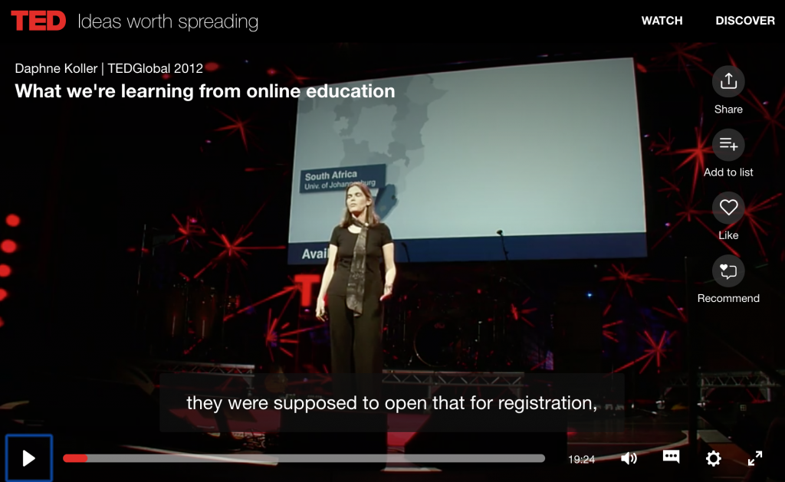

5.1 Breve histórico


Para assistir a este vídeo do YouTube, clique no gráfico. Para uma resposta a este vídeo, consulte: ‘O que está certo e o que está errado com os MOOCs no estilo Coursera’.

O termo MOOC foi usado pela primeira vez em 2008 para uma disciplina oferecida pela Divisão de Extensão da Universidade de Manitoba, no Canadá. Essa disciplina sem créditos, Connectivism and Connective Knowledge (CK08), foi projetada por George Siemens, Stephen Downes e Dave Cormier. Teve a matrícula de 27 estudantes presenciais que pagavam taxas de matrícula, mas também foi oferecida on-line gratuitamente. Para surpresa dos professores, 2.200 estudantes se matricularam na versão on-line gratuita. Downes classificou essa disciplina e outras semelhantes que se seguiram como conectivistas ou cMOOCs, devido ao seu design (Downes, 2012).
No outono de 2011, dois professores de ciência da computação da Universidade de Stanford, Sebastian Thrun e Peter Norvig, lançaram um MOOC sobre Introdução à IA (inteligência artificial) que atraiu mais de 160.000 matrículas, seguido rapidamente por outros dois MOOCs, também em ciência da computação, dos professores de Stanford Andrew Ng e Daphne Koller. Thrun fundou a Udacity, e Ng e Koller estabeleceram a Coursera. Trata-se de empresas com fins lucrativos que utilizam softwares desenvolvidos especificamente para permitir matrículas massivas e servir de plataforma para o ensino. A Udacity e a Coursera formaram parcerias com outras universidades de prestígio, onde as universidades pagam uma taxa para oferecer seus próprios MOOCs através dessas plataformas. A Udacity mudou de direção em 2013 para se concentrar no mercado de formação profissional e corporativa.
O Instituto de Tecnologia de Massachusetts (MIT) e a Universidade de Harvard desenvolveram, em março de 2012, uma plataforma de código aberto para MOOCs chamada edX, que também funciona como plataforma de matrícula e ensino on-line. A edX também desenvolveu parcerias com universidades de destaque para oferecer MOOCs sem cobrança direta de hospedagem de seus cursos, embora algumas possam pagar para se tornarem parceiras da edX. Outras plataformas de MOOCs, como a FutureLearn, da Open University do Reino Unido, também foram desenvolvidas. Como a maioria dos MOOCs oferecidos através dessas diversas plataformas é baseada principalmente em videoaulas e testes corrigidos por computador, Downes classificou-os como xMOOCs, para diferenciá-los dos cMOOCs mais conectivistas.
Em março de 2019, havia mais de 11.000 cursos MOOC de 900 universidades em todo o mundo, com pouco mais de 100 milhões de registros (Shah e Pickard, 2019). A grande mudança em 2017-2018 foi a migração para diplomas baseados em MOOC, com sete universidades anunciando 15 graduações em 2017 e, em 2018, mais 30 universidades aderiram e lançaram mais de 45 graduações (Johnson, 2019).
Além de diplomas completos, a edX e a Coursera oferecem múltiplas microcredenciais, cada uma com sua própria marca. No geral, existiam 630 microcredenciais no final de 2018, mas a maioria das novas credenciais veio de apenas duas modalidades: as especializações da Coursera e os certificados profissionais da edX (Johnson, 2019).
Referências
Downes, S. (2012) Massively Open Online Courses are here to stay, Stephen’s Web, 20 de julho
Johnson, S. (2019) Much ado about MOOCs: Where are we in the evolution of MOOCs? Edsurge On Air, 26 de fevereiro
Shah, D. and Pickard. L. (2019) Massive list of MOOC providers around the world Class Central, 30 de julho